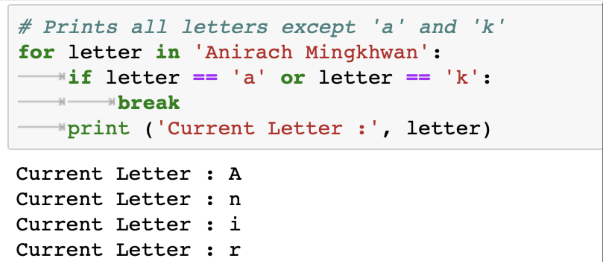
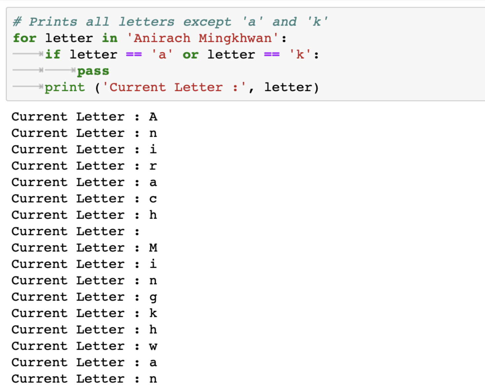

03
REPETITION WHILE FOR
REPETITION STRUCTURES
PROGRAM FLOW
PROGRAM FLOW
REPETITION STRUCTURE
REPETITION STRUCTURE
This code is one long sequence structure containing a lot of duplicated
code. There are several disadvantages to this approach, including the following:
• The duplicated code makes the program large.
• Writing a long sequence of statements can be time consuming.
• If part of the duplicated code has to be corrected or changed then the correction or change has to be done many times.
A repetition structure causes a statement or set of statements to
execute repeatedly.In this course, we will look at two broad categories of loops:
condition-controlled and count-controlled.
CONDITION-CONTROLLED LOOP
while
CONDITION-CONTROLLED LOOP


 **all of the statements in the block are indented
**all of the statements in the block are indented
A re A condition-controlled loop uses a true/false condition to control the number of times that it repeats. In Python you use the while statement to write a condition-controlled loop
**all of the statements in the block are indented
COUNT-CONTROLLED LOOP
for
COUNT-CONTROLLED LOOP
 **all of the statements in the block are indented
**all of the statements in the block are indented


A count-controlled loop repeats a specific number of times. In Python you use the for statement to write a count- controlled loop.
**all of the statements in the block are indented
CALCULATING RUNNING TOTAL
A running total is a sum of numbers that accumulates with each iteration of
a loop . The variable used to keep the running total is called an
accumulator.
Programs that calculate the total of a series of numbers typically use two elements:
• A loop that reads each number in the series.
• A variable that accumulates the total of the numbers as they are
read.


SENTINELS
A sentinel is a special value that marks the end of a sequence of values.
• Simply ask the user, at the end of each loop iteration, if there is another value to process. If the sequence of values is long, however, asking this question at the end of each loop iteration might make the program cumbersome for the user.
• Ask the user at the beginning of the program how many items are in the sequence. This might also inconvenience the user, however. If the sequence is very long, and the user does not know the number of items it contains, it will require the user to count them.


• Simply ask the user, at the end of each loop iteration, if there is another value to process. If the sequence of values is long, however, asking this question at the end of each loop iteration might make the program cumbersome for the user.
• Ask the user at the beginning of the program how many items are in the sequence. This might also inconvenience the user, however. If the sequence is very long, and the user does not know the number of items it contains, it will require the user to count them.
INPUT VALIDATION LOOPS
Input validation is the process of inspecting data that has been input to a program, to make sure it is
valid before it is used in a computation. Input validation is commonly done with a loop that iterates as long as an input variable references bad data .


NESTED LOOPS
A loop that is inside another loop is called a nested loop.

PASS, CONTINUE, BREAK
CONTINUE
CONTINUE
BREAK
BREAK
PASS
PASS
We generally use it as a placeholder.
Suppose we have a loop or a function that is not implemented yet,
but we want to implement it in the future.They cannot have an empty
body. The interpreter would complain. So,
we use the pass statement to construct a body that does nothing.